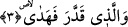

bir ruhu kabul edecek biçimde düzenlenmiştir.
et-Te’vilat en-Necmiyye’de şöyle deniyor: Allah herşeyi varlığa göre yaratmış ve onu
düzene koymuştur. Bu öyle bir düzendir ki insanın fıtrî istîdâdına göre hazırlanmış olan
ilâhi feyz bu düzen sâyesinde insana ulaşır. Bazı âlimler bu âyeti şöyle anlarlar: Allah
yaratıkları yaratmış ve yaratma noktasında onları eşit tutmuş; ancak hidâyet verme
açısından bazılarını diğerlerinden ayırmıştır.
3. Ve takdir edip, yol göstermiştir.
Okumuş olduğumuz bu ifâde, yukarda geçen “ellezi” kelimesi üzerine atfedilmiştir.
Buna göre âyete mânâ verecek olursak şöyle deriz: Herşeyin cins, çeşit, fert, miktar,
sıfat, fiil ve ecellerini takdir etmiştir. Nitekim Peygamber (s.a.) Efendimiz bu konuda
şöyle buyurur: “Allah gökleri ve yeri yaratmadan ellibin sene önce yaratacak olduğu
yaratıkların miktarını takdir etmiştir.” [75] Bu şu demektir: Allah gökleri ve yeri
yaratmadan ellibin sene önce eşyanın cinslerini belirlemiştir. Ayrıca her çeşit şahsı
belli bir miktarda tayin etmiştir. Her şahsın cüsse, şekil, güzellik, çirkinlik, bahtiyarlık,
bedbahtlık, hidâyet, dalalet, renk, şekil, yiyecek, koku, rızık, ecel ve bunun dışında diğer
özelliklerini takdir edip belirlemiştir ve bütün bu özellikleri belli bir miktar üzerinden
tayin buyurmuştur. Nitekim Allah aynı konuyu bir âyet-i kerimesinde şöyle dile getirir:
“Herşeyin hazineleri yalnız bizim yanımızdadır. Biz onu ancak belli bir ölçü ile
indiririz.” (Hicr, 15/21)
Bunlardan herbirini kendi aslına doğru yönlendirmiştir. Dolayısıyla herşeyi kendi
aslına, irade ve karakterinin icabına yöneltmiştir. Âyetler indirip, deliller göstererek,
kabiliyet ve istek yaratarak herşeyi yaratılış maksadına doğru yönlendirmiştir. Eğer bir
kimse bitki ve hayvanların durumlarını inceleyecek olursa bütün bu yaratıklarda insanın
aklına durgunluk verecek bir takım alâmetler görür. Şimdi biz bunlara bazı örnekler
verelim:
Hikaye edilir ki, yılanın biri bin yaşına basınca gözleri kör olur. Allah ona zeryane
denen yaş bir bitkinin yaprağını gözlerine sürmesini ilham eder. Ta ki gözleri yeniden
açılsın. Hayvanın kör olduğu o ıssız yerle zeryane bitkisinin bulunduğu kır arasında
kimbilir ne kadar uzun mesâfe vardır? Hayvan mesâfenin uzunluğuna ve körlüğüne
rağmen yolları kateder, zeryane ağacına ulaşıncaya dek bahçeleri geçip şaşmadan
hedefine ulaşır. Ağacın yaprağını gözlerine sürer ve Allah’ın izniyle gözleri açılır.
Yine anlatırlar ki timsahların, dışkısını atacak olduğu bir dübürü yoktur. Yediği
şeylerin artıkları ancak ağızlarından çıkar. Allah bu iş için ona bir kuş tahsis etmiştir.
Kuşun gıdasını Allah bu artıklar olarak ayarlamıştır. Timsah bu kuşu gördüğü zaman
ağzını açar. Kuş girer ve içerdekileri yer. Allah bu kuşun gagasının üstünden ve altından